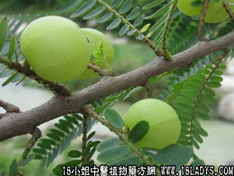

植物名：余柑子。
生长环境：本品为灌木或小乔木。生于荒郊、丘陵地上。
分布：广布于热带亚洲，我国南方普遍产之。
入药部分：果。
采集期：全年采根，七月采果。
自采地点：家种、野生山岗。
性味：性微凉、味先苦后甘。
功能：降火清热、除痰散毒、凉血。
主治、用量和用法：1、小儿咳嗽，配伍用；2、小肠疝气，配伍用。
验方1：（治小儿咳嗽方）油柑子（腌咸）6枚，白榄2枚、清水一碗，煎成一茶杯，温服。
（方解）油柑子化气，腌咸用则降火，白榄除痰。合成降火除痰，化气止咳之剂。
（方歌）小儿痰盛肺不宁，咳嗽频频睡难成，腌咸油柑子六个，白榄两枚咳自平。
验方2：（治小肠疝气方）油柑子30枚、白榄根1两、清水三碗，煎成一碗服。
（方解）油柑子化气，白榄根化气祛湿，合为化气祛湿之剂。疝之因于气滞者，有效。
（方歌）小肠疝气油柑子，白榄根同两味施，子三十枚根一两，清泉三碗煎服之。
附录：（根）散瘀清热毒、治花柳：干用1～2两，猪瘦肉适量，清水煎服。
（叶）治皮肤痕痒、花柳疳毒：干叶1~2两，煎水浸洗患处。